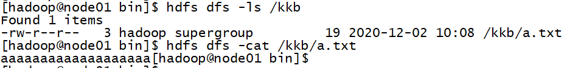

一、描述windows本地开发环境如何配置？并完成配置
修改C:\Windows\System32\drivers\etc\hosts文件，增加：
192.168.111.131 node01.kaikeba.com node01 192.168.111.132 node02.kaikeba.com node02 192.168.111.133 node03.kaikeba.com node03
安装jdk8：
安装时需要注意安装路径不要带空格。安装完成后添加JAVA\HOME环境变量，然后PATH增加$JAVAHOME$/bin
windows下hadoop环境配置：
安装时需要注意安装路径不要带空格。安装完成后用课件中的bin覆盖，主要增加了winutils.exe和hadoop.dll，并把hadoop.dll复制到C:\Windows\System32下。然后添加HADOOP\HOME环境变量，增加$HADOOPHOME$/bin和$HADOOPHOME$/sbin。最后替换$HADOOPHOME$/bin和$HADOOPHOME$/sbin中的*.cmd文件的unix换行符，使之变为windows换行符。
关于安装maven：
由于当前最新版的idea集成maven3.6.3和maven插件，该步骤可以省略。
安装idea（使用免费社区版）：
一路下一步完成安装
idea配置maven：
由于上一步使用idea自带的maven，一般不需要额外配置。但为提升下载速度，可以添加maven的阿里云镜像，C:\Program Files\JetBrains\IntelliJ IDEA Community Edition 2020.2.4\plugins\maven\lib\maven3\conf\settings.xml：
<settings>
<mirrors>
<mirror>
<id>aliyunmaven</id>
<mirrorOf>*</mirrorOf>
<name>阿里云公共仓库</name>
<url>https://maven.aliyun.com/repository/public</url>
</mirror>
</mirrors>
</settings>
二、在idea中，新建maven工程，编程实现创建hdfs的/kkb/目录；并上传文件a.txt到此目录：
pom.xml中增加:
<properties>
<hadoop.version>3.1.4</hadoop.version>
</properties>
<dependencies>
<dependency>
<groupId>org.apache.hadoop</groupId>
<artifactId>hadoop-client</artifactId>
<version>${hadoop.version}</version>
</dependency>
<dependency>
<groupId>org.apache.hadoop</groupId>
<artifactId>hadoop-common</artifactId>
<version>${hadoop.version}</version>
</dependency>
<dependency>
<groupId>org.apache.hadoop</groupId>
<artifactId>hadoop-hdfs</artifactId>
<version>${hadoop.version}</version>
</dependency>
<dependency>
<groupId>org.apache.hadoop</groupId>
<artifactId>hadoop-mapreduce-client-core</artifactId>
<version>${hadoop.version}</version>
</dependency>
<!-- https://mvnrepository.com/artifact/junit/junit -->
<dependency>
<groupId>junit</groupId>
<artifactId>junit</artifactId>
<version>4.11</version>
<scope>test</scope>
</dependency>
<dependency>
<groupId>org.testng</groupId>
<artifactId>testng</artifactId>
<version>RELEASE</version>
</dependency>
<dependency>
<groupId>log4j</groupId>
<artifactId>log4j</artifactId>
<version>1.2.17</version>
</dependency>
</dependencies>
<build>
<plugins>
<plugin>
<groupId>org.apache.maven.plugins</groupId>
<artifactId>maven-compiler-plugin</artifactId>
<version>3.0</version>
<configuration>
<source>1.8</source>
<target>1.8</target>
<encoding>UTF-8</encoding>
<!-- <verbal>true</verbal>-->
</configuration>
</plugin>
<plugin>
<groupId>org.apache.maven.plugins</groupId>
<artifactId>maven-shade-plugin</artifactId>
<version>2.4.3</version>
<executions>
<execution>
<phase>package</phase>
<goals>
<goal>shade</goal>
</goals>
<configuration>
<minimizeJar>true</minimizeJar>
</configuration>
</execution>
</executions>
</plugin>
</plugins>
</build>
java代码：
package com.kkb;
import org.apache.hadoop.conf.Configuration;
import org.apache.hadoop.fs.FileSystem;
import org.apache.hadoop.fs.Path;
import org.junit.Test;
import java.io.IOException;
import java.net.URI;
import java.net.URISyntaxException;
public class HDFSDemo {
@Test
public void mkDirOnHDFS() throws IOException {
Configuration configuration = new Configuration();
configuration.set("fs.defaultFS", "hdfs://node01:8020");
FileSystem fileSystem = FileSystem.get(configuration);
boolean mkdirs = fileSystem.mkdirs(new Path("/kkb"));
fileSystem.close();
}
@Test
public void uploadFile() throws URISyntaxException, IOException, InterruptedException {
Configuration configuration = new Configuration();
FileSystem fileSystem = FileSystem.get(new URI("hdfs://node01:8020"),configuration,"hadoop");
fileSystem.copyFromLocalFile(new Path("file:///C:\\my_stuff\\kkb\\作业\\20201130\\3、数据\\smallfile\\a.txt"), new Path("/kkb"));
fileSystem.close();
}
}
查看确认hdfs中的/kkb目录是否已创建和a.txt文件是否上传成功：
